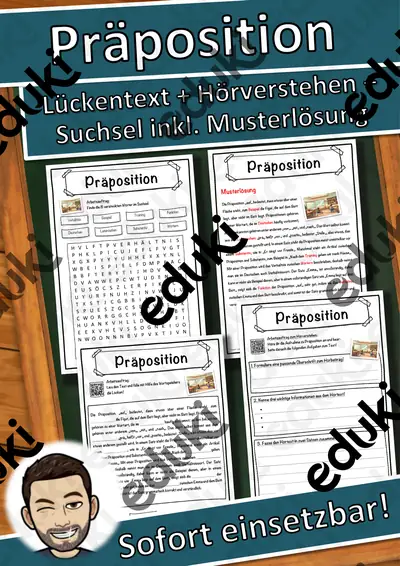
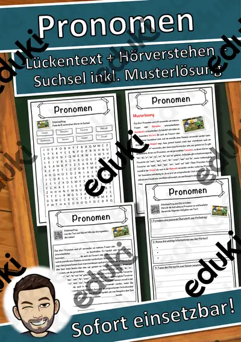
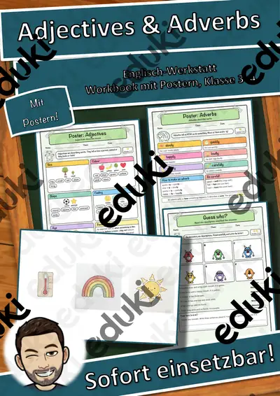

Wortarten: Arbeitsblätter für Klasse 2–7 (Deutsch)
Wortarten sind Grundlage der Grammatik. Ab der Grundschule werden Nomen, Verben und Adjektive unterschieden, später kommen Pronomen, Präpositionen und Adverbien hinzu.
Gearbeitet wird in der Regel an Nomen, Verben und Adjektive, ergänzt um Pronomen, Präpositionen und Adverbien.
Wo genau im Lehrplan das Thema steht, unterscheidet sich von Land zu Land, häufig im Fach Deutsch in den Klassen 2 bis 7. Gemeinsames Ziel: die Schülerinnen und Schüler bestimmen Wortarten in Sätzen und nutzen sie beim Schreiben.
Wer Wortarten auf mehrere Stunden verteilt, startet mit Nomen, übt an Adjektive und schließt mit Präpositionen ab. Alle Blätter sind kopierfertig und enthalten Lösungen für die schnelle Kontrolle. Die Prüfungstrainings bereiten gezielt auf Klassenarbeiten und Abschlussprüfungen vor.
Aus unserem Katalog gehören 10 Materialien zu diesem Thema, darunter Englisch-Werkstatt: Adjectives & Adverbs, Die Wortarten und Präposition Lückentext mit Wortspeicher. Der Bestand umfasst 1 Prüfungstraining und 5 Lückentexte mit Hörverstehen und reicht über Klasse 2–8. Farbige Markierungen pro Wortart in einem Lesetext machen die Strukturen sichtbar.
Das gehört zum Thema
Passende Arbeitsblätter und Materialpakete

Die Wortarten – Prüfungstraining Deutsch (Klasse 8)

Präposition Lückentext mit Wortspeicher Hörverstehen und Suchsel

Pronomen Lückentext mit Wortspeicher Hörverstehen und Suchsel

Verb Lückentext mit Wortspeicher Hörverstehen und Suchsel

Adjektiv Lückentext mit Wortspeicher Hörverstehen und Suchsel

Adverb Lückentext mit Wortspeicher Hörverstehen und Suchsel

Englisch-Werkstatt: Adjectives & Adverbs – Describing Words, Poster und Spiele, Kl. 3–4

Adjektive-Rechtschreibung Adjektive (auch Homeschooling)

Adjektve Rechtschreibung, Adjektive Nomen zuordnen (auch Homeschooling)

Comic und Emotionen, Adjektive
Häufige Fragen
Für welche Klassenstufe passen die Arbeitsblätter zu Wortarten?
Die 10 Materialien zu diesem Thema sind für Klasse 2–8 ausgelegt, die meisten davon für Klasse 6. Einzelne Titel lassen sich mit Anpassung auch eine Stufe darunter oder darüber einsetzen.
Welche Inhalte decken die Materialien zu Wortarten ab?
Die Materialien arbeiten an Nomen, Verben und Adjektive und gehen dann weiter zu Pronomen, Präpositionen und Adverbien. Vorab lohnt ein Blick in den Lehrplan des eigenen Bundeslandes.
Wie setze ich Wortarten im Unterricht ein?
Beginnen Sie mit einem Einstieg zu Nomen und ergänzen Sie nach Bedarf. Farbige Markierungen pro Wortart in einem Lesetext machen die Strukturen sichtbar.
Mehr Material nach Fach und Klasse
- Alle Materialien Deutsch
- Arbeitsblätter Deutsch Klasse 2
- Arbeitsblätter Deutsch Klasse 3
- Arbeitsblätter Deutsch Klasse 4
- Arbeitsblätter Deutsch Klasse 5
- Arbeitsblätter Deutsch Klasse 6
- Arbeitsblätter Deutsch Klasse 7
- Unterrichtsmaterial Klasse 2
- Unterrichtsmaterial Klasse 3
- Unterrichtsmaterial Klasse 4
- Unterrichtsmaterial Klasse 5
- Unterrichtsmaterial Klasse 6
- Unterrichtsmaterial Klasse 7
Verwandte Lehrplanthemen
- Rechtschreibung und Diktate (Deutsch, Klasse 1–8)
- Gedichte und Balladen (Deutsch, Klasse 3–10)
- Lesen und Leseverstehen (Deutsch, Klasse 1–6)
- Märchen (Deutsch, Klasse 1–5)
- Inhaltsangabe und Textarten (Deutsch, Klasse 6–10)